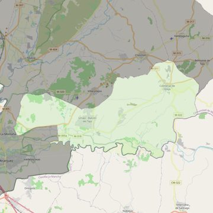

Santa María la Mayor
- Arciprestazgo
- Chinchón
- Población
- Colmenar de Oreja
- Dirección postal
- c/ Costanilla de las Ánimas, 1
- Código postal
- 28380
- Extensión
- 126,00 km² (12.600 ha)
- Teléfono
- 918 943 117
- Correo electrónico
- santamarialamayorcolmenardeoreja@diocesisgetafe.es


Descargar mapaLímites según decreto
Los del término municipal